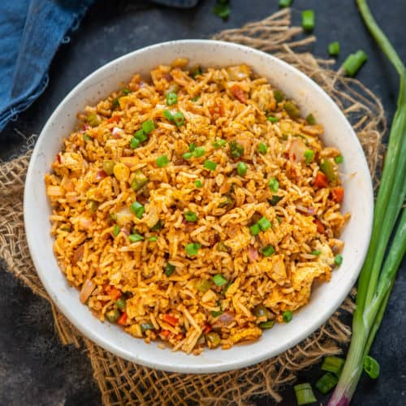

Egg Fried Rice Recipe

Description
A popular Indo Chinese recipe prepared with leftover rice, scrambled eggs, assorted veggies and spicy schezwan sauce. This 15 minutes recipe is perfect for weekday meals. Try it!
Ingredients
- Rice – Leftover (1-2 days old) white rice gives you the best results when added in the fried rice. Incase you are making fresh rice, let it cook down fully or refrigerate it for a few hours before mixing in with other ingredients
- Vegetables – I like to loaded my fried rice recipes with capsicum, beans, cabbage, and carrots as it adds a beautiful crunch. You can even add red/yellow bell pepper, spring onions, mushroom, zucchini, broccoli, etc.
- Egg – Scrambled eggs adds an extra taste and flavour along with veggies. You can also add chicken or prawns if you want to add extra protein.
- Schezwan Sauce – The star ingredient, which makes this recipe different from the regular fried rice recipes.
- Cumin powder
- Coriander powder
- Turmeric
- Salt
Steps
- Heat 2 tablespoon of oil in a wok.
- When oil becomes hot, add ginger and garlic. Saute for just few seconds.
- Add capsicum, beans, cabbage and carrots. Saute all veggies for 2-3 mins. Don’t overcook them.
- Add schezwan sauce, soy sauce, vinegar, brown sugar, salt, chilli oil and black pepper and cook for a minute.
- add rice
- Enjoy!